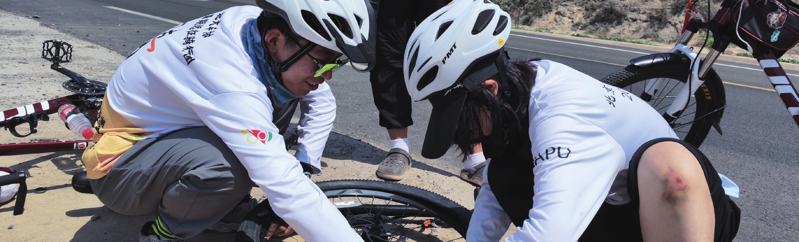
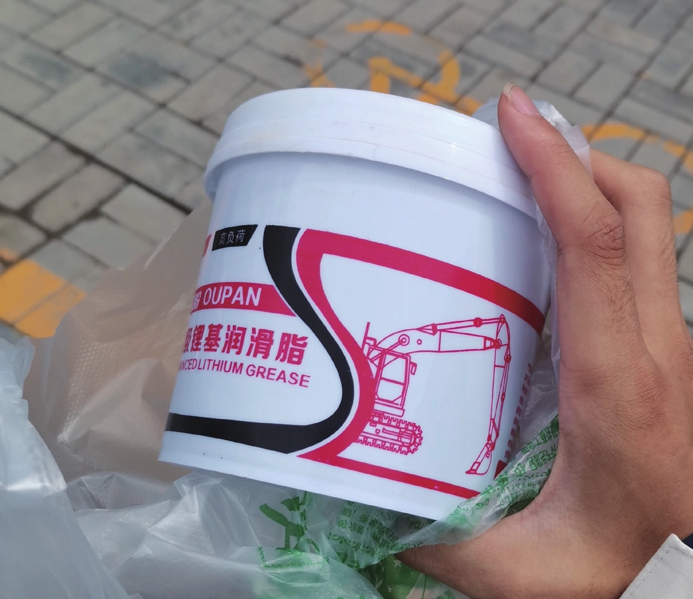
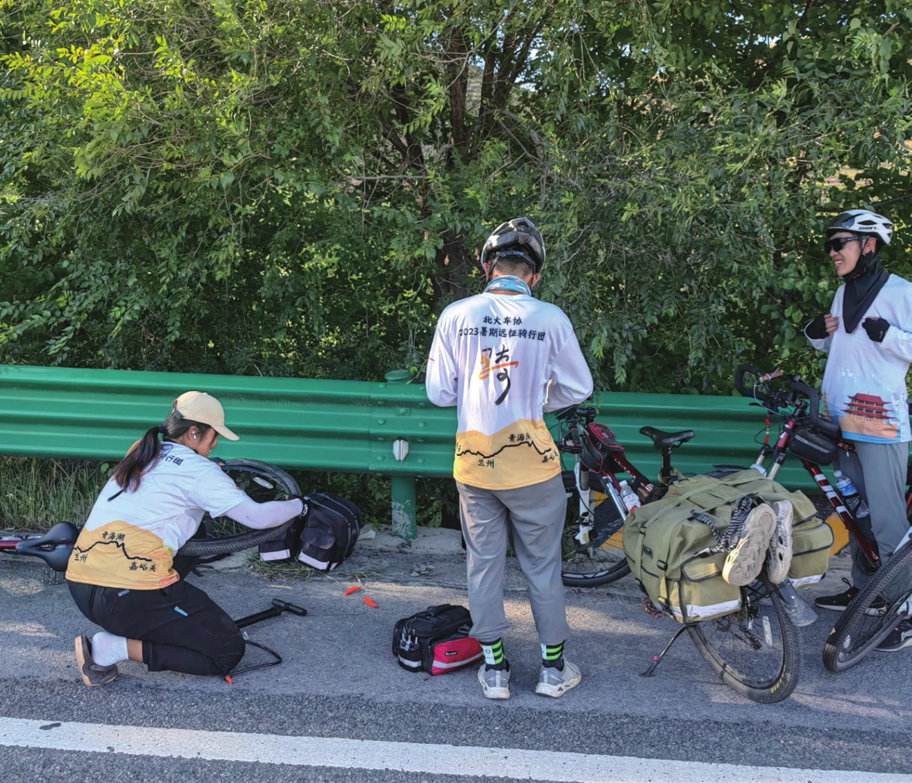

补胎片的故事
原刊64
时间已经是 24 冬游了，出发前从宿舍里翻找路上可以寄的明信片，摸出了两盒明信片，一盒是西安的，一盒是华山的。我们暑期的起点西安突然又出现在我眼前，耳边仿佛又响起了十哥“小小华山”的声音。
西安是整个暑期玩的最多的城市，大唐不夜城不负盛名，金碧辉煌流光溢彩，大唐不夜城中被一群大声尖叫的孩子围绕着的喷泉，似乎是叫声越大喷泉喷得越高，印象颇深。西安还有茶话弄，还有冒雨买回来的瓜。十哥大放厥词却没吃下的毛肚，团儿改签来改签去的华山车票，给小妹留下阴影的缆车人潮，零星的记忆碎片在脑海中荧光闪闪。和九九、十哥在西安城墙飙车，终究是没吃上那口甜品；和小妹暑期后又回西安，终究是没去上一次大唐芙蓉城。


除了这些，西安还有找遍数家车店都没找到的小号螺母，最后发现其实螺丝盒里是有的。十哥断了的挡泥板支架，又一次向我宣告挡泥板的质量不好评价，找来找去，最后在一家摩托店锯掉了断裂的部分，接上了转接头，方告一段落，不过后面三三的车挡泥板再断支架，穷途末路只能缠绕电工胶带。在西安听闻了另外两团的扎胎经历，和团儿商量要不要缠电工胶带，感觉终究是太过麻烦，决定出一个问题缠一个，于是引出后面无休止的劳碌……
作为押后负责，一直都没能解决扎胎不断的问题。从第一天上路，就接连扎胎，四姐扎胎初露锋芒，不过一直都没有来得及给四姐的车缠电工胶带。此时押后包里还有一些比较好用的小补胎片，所以此时大家还没有意识到问题的严重性。随着小补胎片被用完，我们开始使用我从网上买的一款补胎片，问题开始显露出来，这款补胎片根本不好用，补好之后的补胎片刚打气时看起来还很正常，但是一旦放气准备卷胎收工，就会看到随着内胎放气收缩，随之膨胀的补胎片并不买账，没有收缩反而变得皱皱巴巴，然后飞边。加上补胎片的外面覆盖的不是纸而是塑料片，每次将塑料片取下来都十分费劲。在好多人被补胎片折磨之后，我踏上了寻找补胎片的漫漫旅途。加上被吐槽了好几次小气筒实在难用，于是在陇县休整的时候去五金百货买了一个带气压表的打气筒，20 块钱，随着暑期的行程增加，这个打气筒也逐渐崩解，从丢失气压表的透明盖子，到丢失气压表的指针，到最后确实没法打气了，刚好也到了嘉峪关，于是心满意足地弃之。


在固原，三三追到队的那天。我们的住宿点在固原郊区，附近根本没有车店，于是骑出四公里去找车店，寻找补胎片和黄油。在一家车店找到了一款绿色的补胎片，这就是噩梦的开始。漫寻黄油无果，无奈只能去五金店寻找，买到了超大桶的黄油，大概是我这辈子都用不完的量。这个绿色的补胎片拿到后还给小八用来补胎试了一下，当时问小八这个补胎片怎么样，小八说，很好。但是在过一天晚上，隔壁五人大房间玩得不亦乐乎的时候，我在我们房间面对一个怎么也补不好的胎汗流浃背。这个胎是被一个旧补胎片补过的，我决定将这个旧补胎片撕掉，虽然撒气的时候补胎片会很容易撕去，但是这个时候补胎片却死死地抓住了胎面，怎么也扯不下来，最后扯下来后也残留了很多的“断壁残垣”，于是贴上去的第一个补胎片光荣地飞边了。我再一次撕去补胎片，用力锉掉了上一个补胎片的遗骸，之后还是用了两个补胎片才堪堪让其不漏。此时我意识到这个补胎片不对劲，在砸胎完成之后试图揭去表面的塑料纸时，塑料纸总是难以取下，非常容易将补胎片一起揭下来，需要用指甲抵着即将揭竿而起的补胎片，把如胶似漆的补胎片和塑料纸艰难分开，但似乎还好？


后面这款绿色补胎片的问题继续暴露出来，可能是未上高原天气比较热，补胎片竟然发生了“融化”，在很多地方不断地破出小口，不断漏气，甚至还有刚补好的胎打气之后惊人地鼓起一个球形气泡，然后破裂。不行，这样不行。又去了另外一个车店购买补胎片，结果这次补胎片和塑料纸的贴合又过弱了，试图将锡纸从补胎片上取下时，第一个掉下来的却是塑料纸，只是尝试，我就知道，不行，这个不行。在到西宁的一天，问题彻底爆发，前站发射出去又扎，直接被大队收回，另发前站，一个个胎换上去，一个个胎不能用，终于苟活到了午饭点，我开始寻找附近哪里有自行车店，下午路上经过时直接去买了十个内胎，后面决定只换不补，所有被之前的破烂补胎片补过的胎全部弃掉，等新网购的欧耐冷补胶补胎片到为止。一直到祁连，补胎片的问题才解决，此时已经快要到终点了……
作为押后负责，这个问题的处理无疑是十分失败的，让大家的骑行节奏与体验都受到了很大的影响，路上辛苦大家了，只希望后来人不要重蹈覆辙，出发前一定确定所有东西都是好用的。